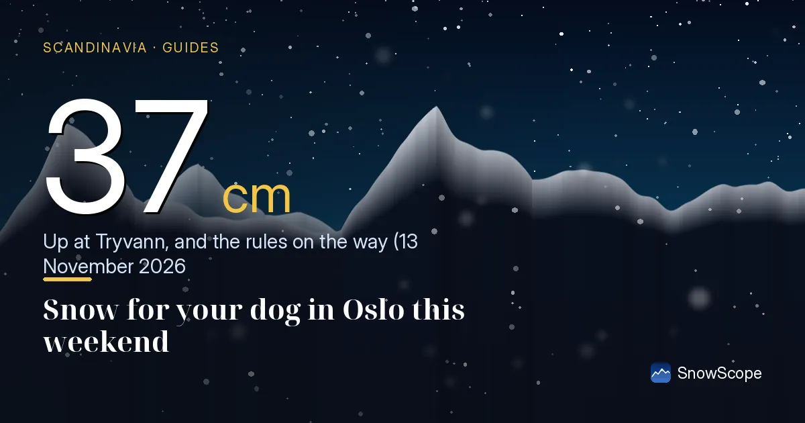

Snow for your dog in Oslo this weekend: 37 cm up at Tryvann, and the rules on the way (13 November 2026)
This is the first proper snow weekend for Oslo's dogs. In town the snow is thin, 4 cm at Blindern, but up in Nordmarka it is deep: 31 cm at Bjørnholt and 37 cm at Tryvannshøgda, most of it fallen in the last day. Saturday is cold and dry. Here is where to go and what the rules are.
See the live snow forecast for Oslo in the SnowScope appSnow depth, powder alerts and the 3D map, free.
Up the hill for the real snow
Height is everything this weekend. In town the ground is barely white; north of the city, Hakadal at 170 m has 15 cm, and higher in Nordmarka there is 31 to 37 cm. The best plan is to take the dog up to the forest edge, around Frognerseteren, Sognsvann or the hills by Tryvann.
Saturday is the day: dry, from about -4 °C at night to a few degrees above zero. Sunday turns milder and Monday brings around 10 mm of rain, which will hit the snow in town first.

Leash rules in November
The national leash period in Norway runs from 1 April to 20 August, so it is over. But Oslo's own rules still ask you to keep the dog under control in public places, by lead or in another way, and some nature reserves, such as Østensjøvannet, have a lead requirement all year. In winters with special snow and cold, the municipality can also decide on an extra leash period to protect wildlife, so keep an eye on its pages if the snow stays.
Off the lead without worry: the city has 10 off-leash areas for dogs, among them Hundejordet in Frognerparken, Styggedalen by Bogstad, Isdammen at Årvoll, Skraperudtjern and Ola Narr at Tøyen.
Ploughed forest roads in Marka
In winter the municipality ploughs a number of forest roads in Marka for walkers, several of them lit. The round of Sognsvann is a little over 3 km; Midtstuen to Tryvann is about 4.5 km; from Hammeren in Maridalen a ploughed road of 4 km leads up to Ullevålseter. At Skar to Øyungen the east side is a ploughed road and the west side a prepared ski track. With this much fresh snow, check that ploughing has started before you go.
Tips for skiers
- Keep the dog on the road side wherever a ploughed road runs next to a ski track, as at Øyungen: skiers and dogs share the forest better that way.
- Snow balls up between the toes of long-haired dogs; trim the paw hair or use booties on longer trips.
- Short daylight: a light on the collar and a reflective vest for both of you on the forest roads.
More maps (external sites)
References and credits
- MET Norway, free meteorological data (station reports) www.met.no/en/free-meteorological-data
- Ogimet, archive of the international SYNOP station reports (Norway, WMO block 01) www.ogimet.com/
- Oslo kommune, båndtvang og hundeparker (leash rules and the dog areas) www.oslo.kommune.no/natur-kultur-og-fritid/tur-og-friluftsliv/besoksgard-hundepark-og-viltforvaltning/bandtvang-og-hundepark/
- Oslo kommune, Hundejordet in Frognerparken, off-leash area for dogs www.oslo.kommune.no/natur-kultur-og-fritid/tur-og-friluftsliv/parker-og-lekeplasser/hundejordet-frognerparken-friomrade-for-hund/
- Oslo kommune, walking in Marka on ploughed forest roads in winter www.oslo.kommune.no/natur-kultur-og-fritid/tur-og-friluftsliv/marka/her-kan-du-ga-til-fots-i-marka-pa-broyta-skogsvei/
- Lovdata, lov om hundehold (hundeloven), § 6 lovdata.no/dokument/NL/lov/2003-07-04-74
- Open-Meteo, weather forecast data (ECMWF and ICON models) open-meteo.com/
About these numbers
Snow depth today: measured at weather stations on the morning of 13 November 2026 (MET Norway station reports in the international SYNOP format); a station reports the snow on its own small plot, so a few kilometres away and a hundred metres higher the ground can look different. Usual depth for the date: SnowScope snow history, 46 past winters (1980-81 to 2025-26), a model of the past at the city's height, not a station record. Weekend: two weather models (ECMWF IFS and DWD ICON, read through Open-Meteo), given as a range. Places and rules: the official pages listed below.
Cite this report
For research, teaching or the press: the numbers and charts are free to reuse under CC BY 4.0 with this citation.
SnowScope (2026), Snow for your dog in Oslo this weekend: 37 cm up at Tryvann, and the rules on the way (13 November 2026), https://snowscope.app/blog/en/2026/11/oslo-dog-snow-weekend-13-november-2026.html, accessed 2026-11-13
SnowScope (Atlas Labs). (2026, November 13). Snow for your dog in Oslo this weekend: 37 cm up at Tryvann, and the rules on the way (13 November 2026). SnowScope snow reports. https://snowscope.app/blog/en/2026/11/oslo-dog-snow-weekend-13-november-2026.html
BibTeX
@misc{snowscope2026oslodogsnowweekend13nove,
author = {{SnowScope (Atlas Labs)}},
title = {Snow for your dog in Oslo this weekend: 37 cm up at Tryvann, and the rules on the way (13 November 2026)},
year = {2026},
month = nov,
howpublished = {\url{https://snowscope.app/blog/en/2026/11/oslo-dog-snow-weekend-13-november-2026.html}},
note = {Published 2026-11-14 13:29 UTC; accessed 2026-11-13}
}· CC BY 4.0 · Methods, data and tools →
Follow Oslo
Free: a message when fresh snow is coming, and the forecast every morning.
More snow reports

Mad River Glen, Vermont: natural snow, about 30 in (75 cm) at the usual peak at mid-mountain over 46 past winters, February deepest. Three ways to plan a day there.

Skiing Lake Louise early in the season: why it starts early, what November and December snow usually looks like in 46 past winters, and how to ski thin early cover.